EDA local – mediciones_agosto.csv
Filas: 17,280 | Periodo: 2025-01-08 00:00:00 → 2025-12-08 23:59:00
Cobertura temporal
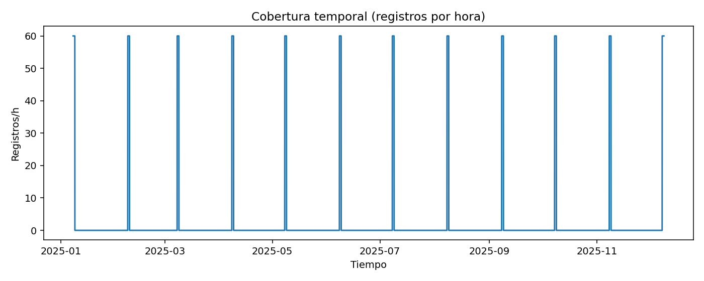
Boxplots
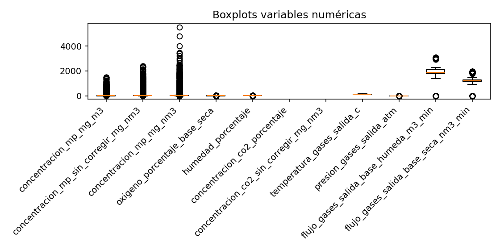
Correlaciones
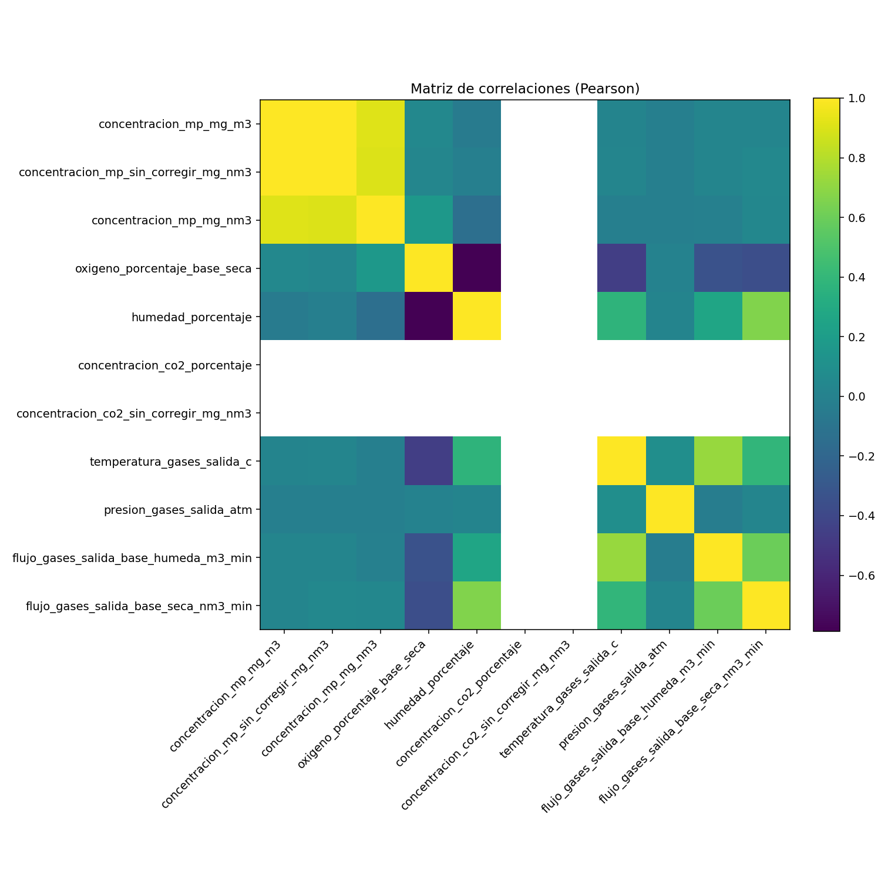
Histograma: concentracion_mp_mg_m3
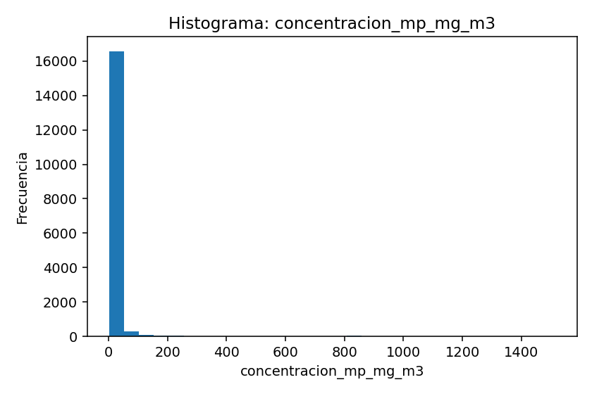
Histograma: concentracion_mp_sin_corregir_mg_nm3
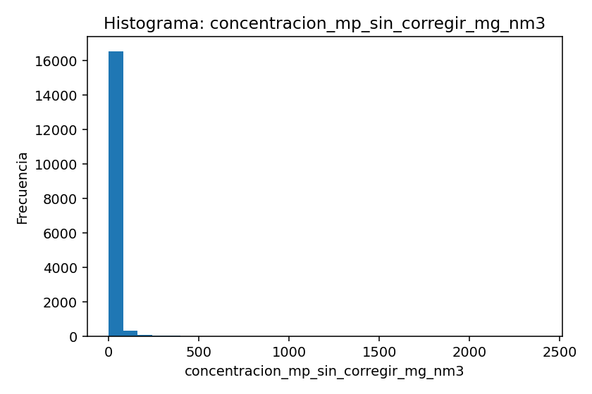
Histograma: concentracion_mp_mg_nm3
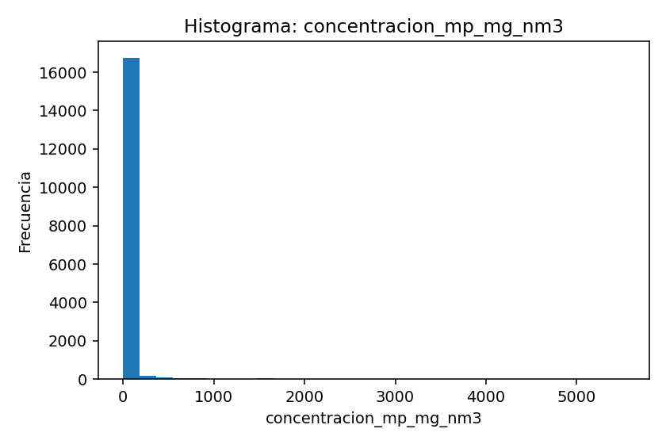
Histograma: oxigeno_porcentaje_base_seca
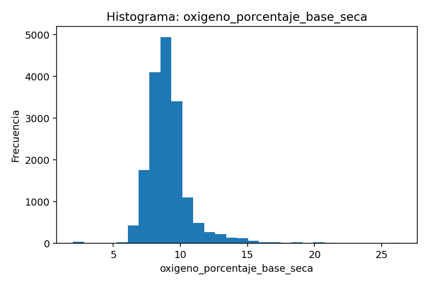
Histograma: humedad_porcentaje
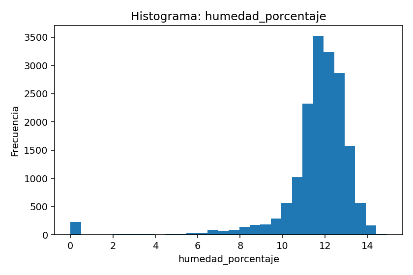
Histograma: concentracion_co2_porcentaje
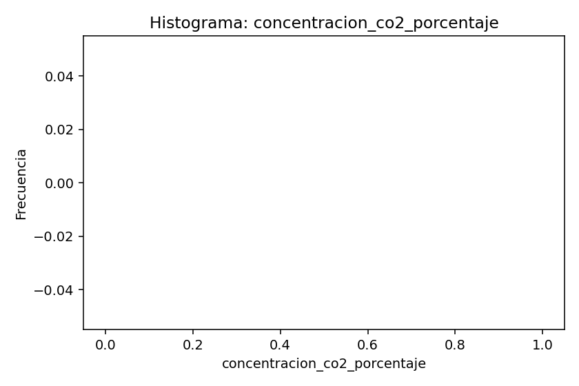
Histograma: concentracion_co2_sin_corregir_mg_nm3
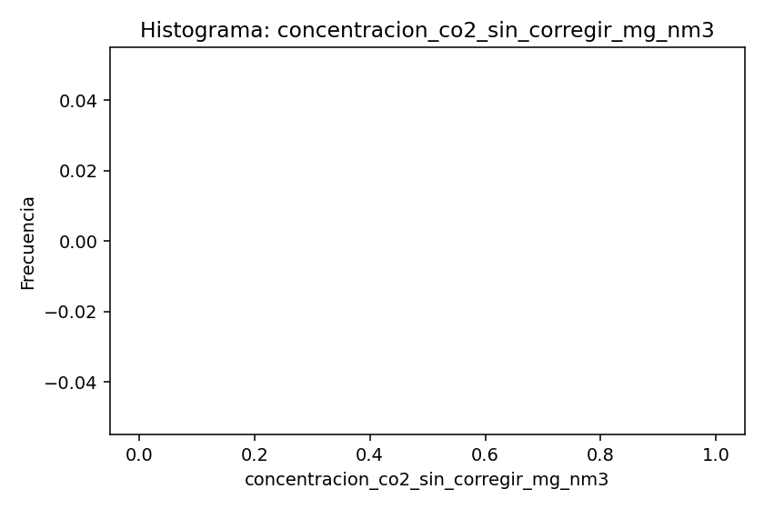
Histograma: temperatura_gases_salida_c
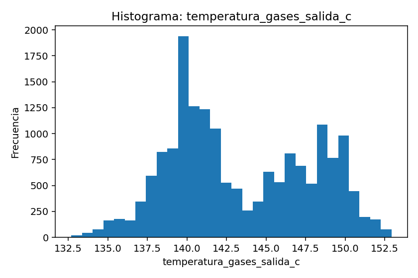
Histograma: presion_gases_salida_atm
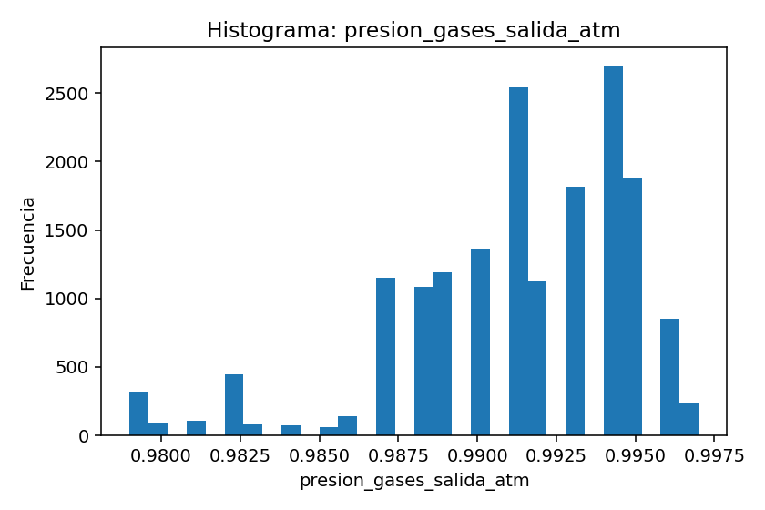
Histograma: flujo_gases_salida_base_humeda_m3_min
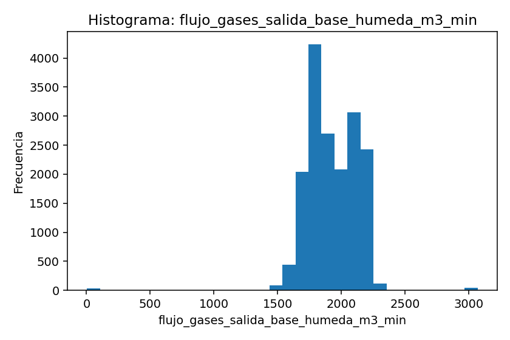
Histograma: flujo_gases_salida_base_seca_nm3_min
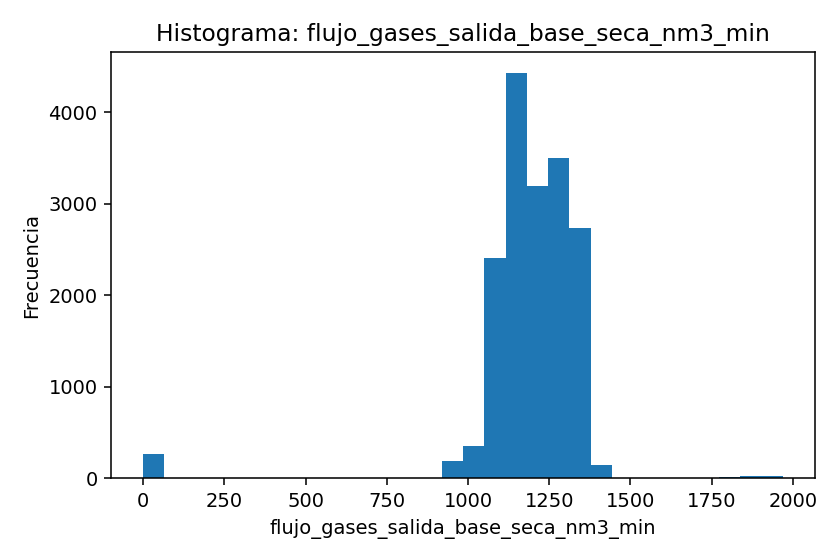
Categorías: tipo_combustible
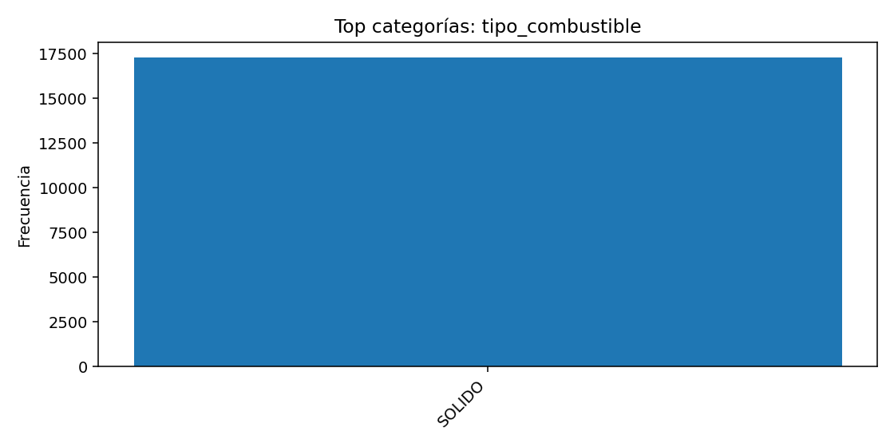
Categorías: combustible
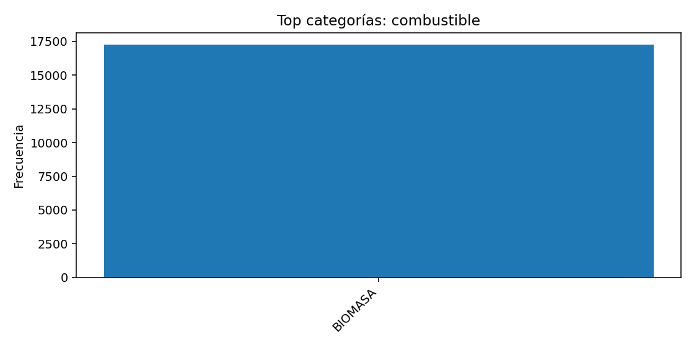
Categorías: estado_fuente
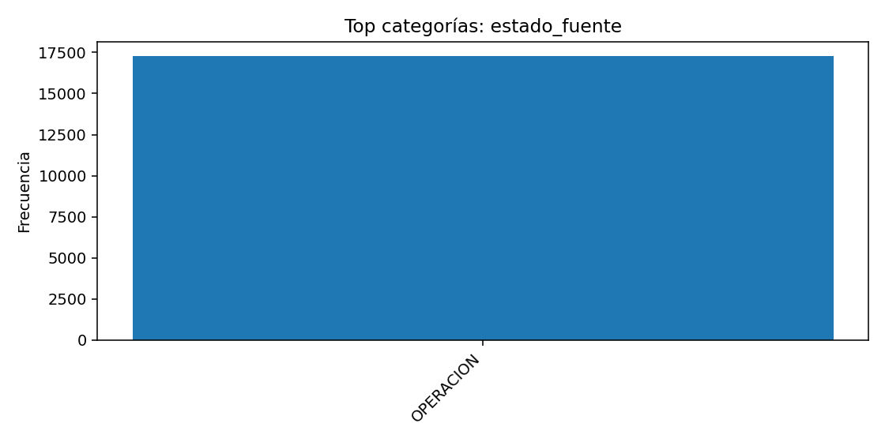